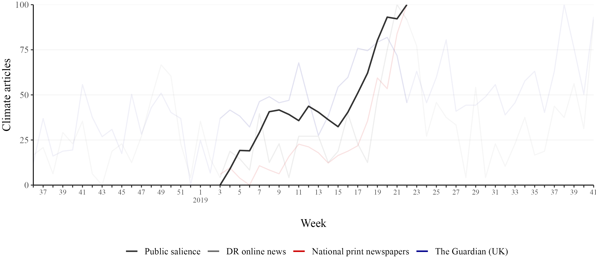

Political Weather:
How experiencing climate change shapes our political lives
PhD Defense
January 9, 2024
There is another way of learning about climate change
- One that is easier, concrete, immediate, and visceral
- Personal weather experiences


Christophe Gateau/AFP/Getty Images, Josh Edelson/AFP, Patrick T Fallon/AFP/Getty Images, EPA Photo, Rhein-Erft-Kreis/Cologne District Government/AP Photo, Oli Scarff/AFP/Getty Images, AP Photo/Alvaro Barrientos, Jennifer Gauthier/Reuters, AP Photo/Rafael Yaghobzadeh
Climate change creates more extreme weather experiences


Anadolu Agency/Ritzau Scanpix, Adrian Dennis/AFP/Getty Images, Jacob Ehrbahn, Tingshu Wang, Oscar Guerrero Ramirez/Getty Images, Remko de Waal/ANP/AFP, Daniel Leal/Agence France-Presse/Getty Images, Go Nakamura/The New York Times, David McNew/Getty Images


Article 1: Media

- “Mass media influence on the rapid rise of climate change”
- Published in International Journal of Public Opinion Research (2022)
Does increased mass media coverage of climate change increase public salience?
(prev. slide) Greenpeace Danmark
Climate change’s rapid rise in 2019


Climate change’s rapid rise in 2019


- Spotting the connection is hard
<Section 9.2 shows weekly media coverage, Section 9.3 shows decomposed time series>
A quick summary –
Does increased mass media coverage of climate change increase public salience?
- Yes, mass media coverage of climate change can drive public salience
- They did so during climate change’s rise in 2019 in Denmark
- Effect concentrated among attentive citizens
→ limit of media influence - “Real-world events” are driving media coverage
- Media have major responsibility
<Supplementary material in Section 9>
Results


- Warmer-than-usual temperatures increase climate awareness
- 5°C temperature shift
(2 SDs) strengthens
climate opinions by 0.5–1.0
Effect size


- Small effects, but …
Heterogeneous effects


Heterogeneous effects


- Only suggestive evidence of heterogeneity
- News exposure
- Not statistically significant
- Temperatures affect everybody

Pro-climate voting


<Section 11.3 shows figure with similar trajectories for other treatments>
Effect estimates

<Section 11.4 plots the sociodemographic balance of the treatment and control group>
Flooding intensity

Part 2 – pro-climate candidates
New candidate dataset from three ingredients:
- Candidate votes
- Flooding cases
- Polling advice application →
Does flooding increase support for pro-climate candidates?


Altinget/DR
Analysis


<Section 11.12 shows the post-estimation DIDID>
Election Day weather
- Turnout around 70%
(2013: 72%, 2017: 71%) - Almost 30% don’t vote
- Thousands vote in one election
and abstain in the other (~20%) - What role does the weather play?

Results
- Rainfall reduces P(voting) by 0.95 %-points per cm
- Effect size close to the simple, unweighted average (- - -)

Results

- Negative rainfall effect grows with more rainfall
- Sunshine also increases turnout
Heterogeneous effects


- Young voter turnout is strongly influenced by Election Day weather
- Problematic for democratic representation
- And … climate change?
Conclusion
Research Question: How are voters’ climate opinions and behavior shaped by media coverage of climate change and personal weather experiences?
- Positive or “constructive” responses to climate change
- Climate change – a self-correcting problem?
- Responsibility of political elites
- “Political Weather”
- Everyday experiences matter in politics
Overview
- Introduction → Section 1
- 1: Media → Section 2.1
- Summary in Section 2.7
- Supplementary material in Section 9
- 2: Temperature → Section 3.1
- Summary in Section 3.7
- Supplementary material in Section 10
- 3: Flooding → Section 4.1
- Summary in Section 4.13
- Supplementary material in Section 11
- 4: Turnout → Section 5.1
- Summary in Section 5.8
- Supplementary material in Section 12
- Conclusion → Section 6
Weekly media coverage


<Section 2.4 shows the main time series>
Statistical results
Vector autoregression model

<Section 2.5 summarises the results>
Temperature measure
temperature_{ct} = \frac{1}{7} \sum_{t-7}^{t-1}{mean\ temperature_{ct} - normal\ temperature_{ct}}

OLS model output

Robustness checks
Changing the sample size or 7-day temperature window

Climate issue ownership

Parallel trends

<Stepwise parallel trends graph in Section 4.5>
Event study plot

Parties and climate candidates

Climate candidate keywords

DIDID coefficient plot
Sample: All candidates

DIDID coefficient plot
Sample: Only candidates running in both elections

Candidates becoming pro-climate?
Sample: 2,077 candidates running in both elections

<Section 4.12 discusses the mechanism>
Parliamentary speeches

Covariate balance: age, distance, and density